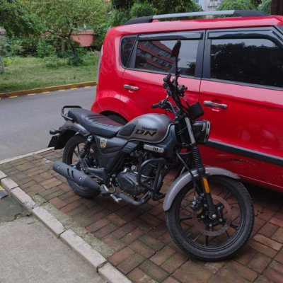

OnyxxOwl
@Manglesuki
@typewriter21445 靠，我之前骑朋友的奔达300，那个脚踏真的靠前，我这种腿比较短的骑的换挡刹车那块真心难受😭

214458
@typewriter21445
巡航车是有迷惑性的种类，长途不舒服短途也难说。如果不是喜欢玩这个风格的话，并不是好选择。
国产巡航的脚踏普遍靠前，一方面把重量都压在了尾椎，另一方面对于车辆的控制比较差。做得好些的我骑过的就是本田cm300和春风的clc450。这两台都不是美巡风格。而且cm300座高实在太低，难以接受。